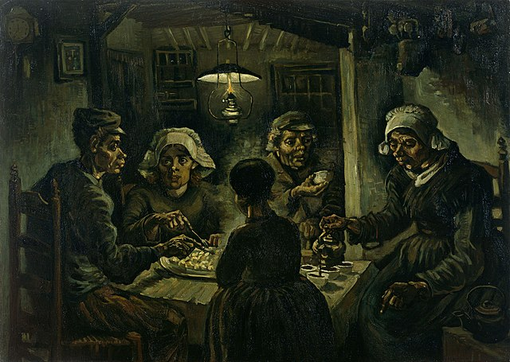

(1).jpg)
Van Gogh (1853-1890) foi um pintor holandês do final do século XIX e um dos maiores expoentes do pós-impressionismo.
Seus trabalhos foram valorizados depois de sua morte e tiveram grande influência na arte do século seguinte, sobretudo na vertente expressionista.
Noite Estrelada, 1889. Van Gogh.
Os Girassóis, 1889. Van Gogh.
Lírios, 1889. Van Gogh.
Os Comedores de Batata, 1885. Van Gogh.
Autorretrato, 1889. Van Gogh.
O quarto em Arles, 1888. Van Gogh.
Terraço do café na praça do fórum, 1888. Van Gogh.
Campo de Trigo com Corvos, 1890.
TENDO COMO SUA PRIMEIRA OBRA: COMEDORES DE BATATAS.
A primeira obra de destaque de Vincent Van Gogh foi “Os comedores de batatas”, de 1885. É um quadro sombrio e escuro, retratando camponeses durante uma refeição noturna.
